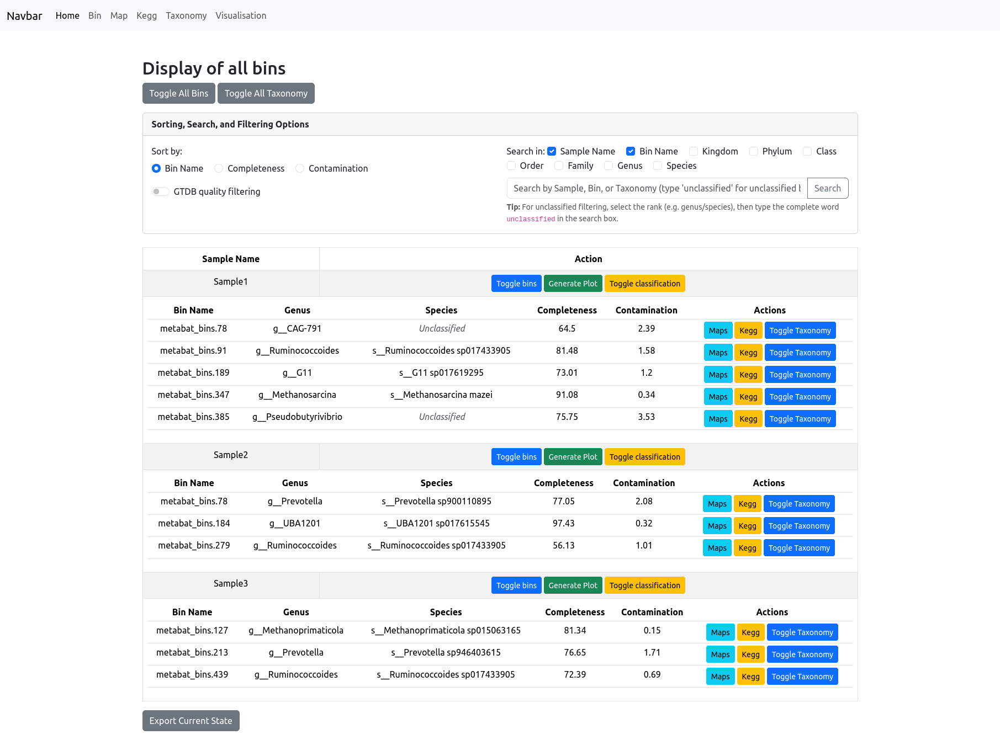
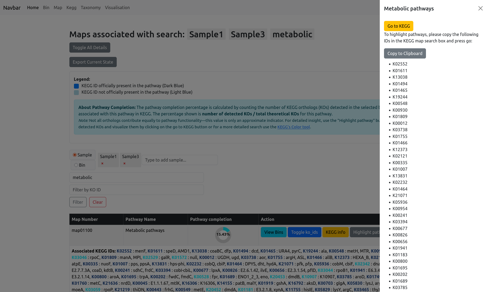
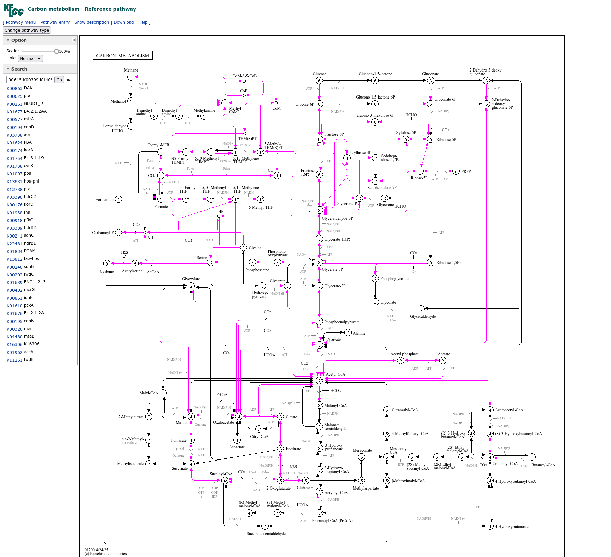
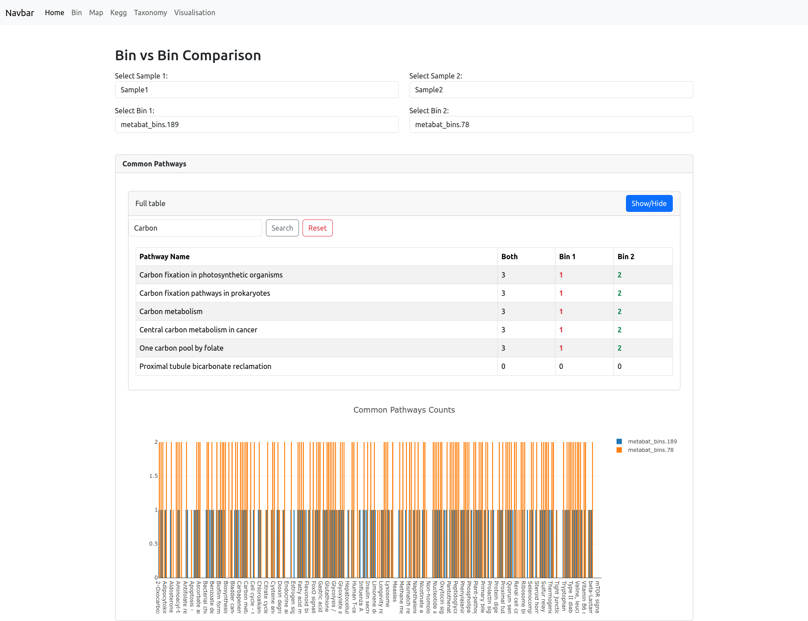
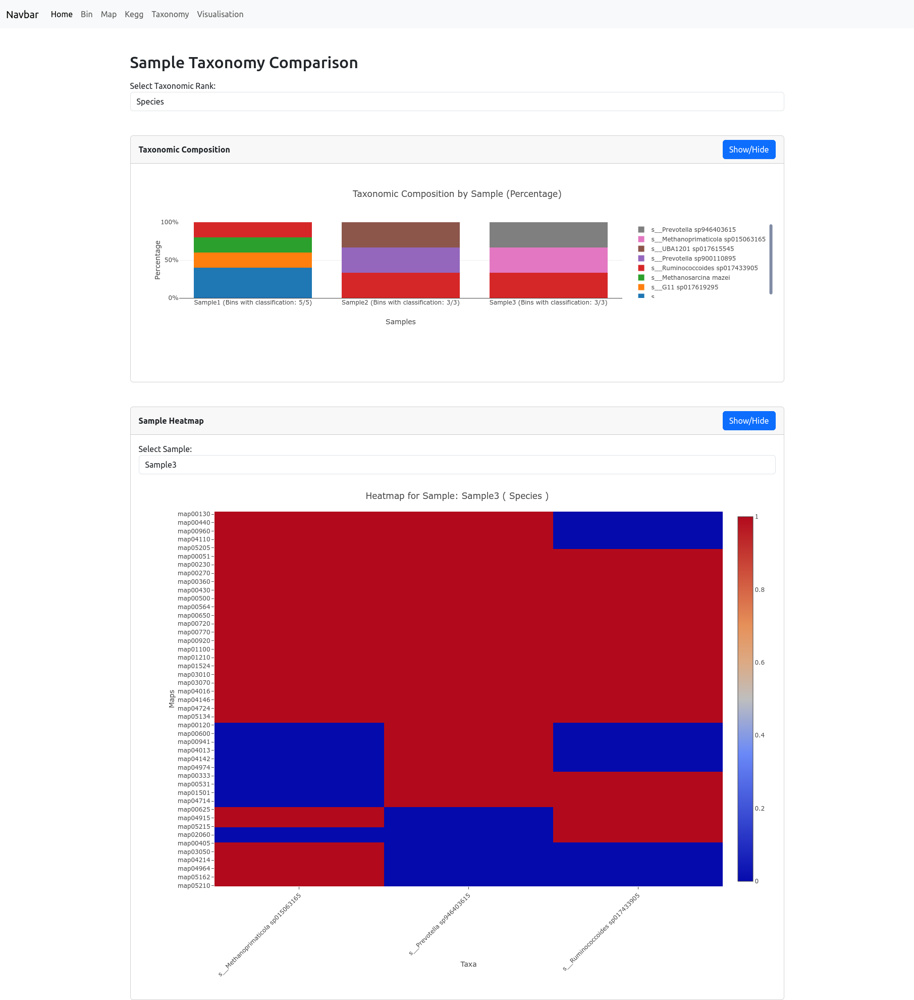

The Pankegg Web Page
This is an overview of all the web app pages:
Home
At the top, a navigation bar provides quick access to all major sections: Home, Bin, Map, Kegg, Taxonomy, and Visualisation. Each of these sections links to a page where you can browse detailed information about your bins, pathway maps, KEGG identifiers, and taxonomic classifications, or use the different interactive visualisation tools. The navbar ensures that you can switch between functional modules.
The landing page, Home, links to all elements that are also present in the navigation bar, and provides a short description for each one. Additionally, it shows the full content of the Visualisation page, Sample VS Sample; Bin VS Bin; Taxonomy comparison; PCA, and briefly describes each one.

Bin
The Bin information page allows you to view and manage all bins in your project, organized by sample. At the top, you will find options to toggle the visibility of all bins or all taxonomy classifications with a single click.
A panel provides advanced sorting, search, and filtering options: - Sort by Bin Name, Completeness, or Contamination. - Filter/search by sample name, bin name, or any taxonomic rank (Kingdom, Phylum, Class, Order, Family, Genus, Species). By default the search is on the sample name and bin name, for filtering by taxonomic rank select one or more before searching. - GTDB quality filtering can be enabled to display only the bins passing Genome Taxonomy DataBase selection criteria (completeness - 5*contamination >50).
Each bin is displayed in a table below its Sample Name, with columns for bin name, genus, species, completeness, and contamination.
For each bin, you can: - View associated maps (pathways) or KEGG orthologs with a single click. - Toggle taxonomy classification to expand or collapse the display of detailed taxonomic information. - Generate a quality plot for the bins in a sample.
These features make it easy to explore, filter, and compare bin quality and taxonomy across all your samples.

Map
The Map information page gives you an overview of all metabolic pathways (KEGG maps) present in your dataset. Each pathway is listed with its map number, pathway name, and a completion percentage, which indicates the proportion of KEGG orthologs (KOs) found in your data relative to the total number of KOs for that pathway.
At the top of the page, you’ll find options to toggle all map details and export your current view. The legend explains how KOs are visualized:
- Dark blue: KEGG ID officially present in the pathway
- Light blue: KEGG ID not officially present in the pathway
Note: Not all KOs contribute equally to pathway function, so this value is only an approximate indicator.
Filtering and Search
You can filter maps by sample, bin, pathway name, or KO identifier using the controls above the table. When filtering by bin or sample, the pathway completion percentage is recalculated to only include the KOs found within the selected bin(s) or sample(s), providing a focused view of its metabolic potential.
Viewing KO Details
For each pathway, you can toggle the display of all detected KO IDs. This expands the row to show the full list of associated KEGG orthologs, with coloring based on their official status in the pathway.
If you filter through KO IDS, the filtered KO will be highlighted in orange to differentiate it from all the other KO IDs.

KEGG Info and Pathway Highlighting
The “KEGG info” button provides a direct link to the pathway’s entry on the KEGG website for further reference.
The “Highlight pathways” button opens a sidebar slider with all relevant KO IDs for the selected pathway. You can quickly copy these IDs and use them in the KEGG color tool to generate a custom view of the pathway map on the KEGG website. The KOs found in your current data will then be highlighted with color.
This combination of interactive filtering, KO details, and external links makes it easy to explore pathway presence, completion, and functional highlights across all your bins and samples.

For examples the (Carbon Metabolism pathway)[https://www.kegg.jp/pathway/map01200] for Sample 1 and 3 of the test data contains:

KEGG
The KEGG page provides an overview of all KEGG orthologs (KO IDs) detected in your dataset. The main table displays, for each KEGG ortholog (KO), its ID, KO name, and a full name/description. You can use the search bar at the top to filter the KEGG IDs.
You see the complete list of KOs across your entire project, with quick-access buttons to:
- View Bins: Show which bins contain the selected KO.
- View Maps: See which metabolic pathways (maps) include the selected KO.
- View Details: Expand to show detailed information for each bin and sample in which the KO is present, including associated GO terms and EggNOG annotations, if available.
- KEGG info: Open the corresponding KO entry on the KEGG website for more detailed biological context.
When you apply filters on the Bin page, the KEGG Identifiers view will display only those KOs present in the selected bin, helping you focus on its functional profile.
Beware that when viewing the details of KOs you can have multiple entries within the same bin as we parse the entire EggNOG annotation file and those files can be redundant.
All action buttons are designed for seamless exploration: filter bins and maps based on any KO of interest, or instantly jump to its external reference.

Taxonomy
The Taxonomy page allows you to explore the taxonomic composition of your dataset at any rank (such as phylum, class, order, etc.) by simply selecting the desired taxonomic level from the dropdown menu at the top of the page. The resulting table lists all taxa detected at that rank, alongside the number of bins classified under each taxon.
The “unclassified” taxa are qualified in this table as their rank letter followed by 2 underscore (e.g. S__).
For each taxon, you have quick access buttons to:
- View only the bins classified as this taxon,
- See the maps (metabolic pathways) found in those bins,
- Browse the KEGG orthologs associated with this taxon.
This makes it easy to drill down into the taxonomic groups of interest and immediately access qualitative and pathway-related information for any selected group.

Sample vs Sample
The Sample vs Sample page enables detailed comparison between any two selected samples in your dataset.
To begin, choose two samples from the dropdown menus. The page then displays a suite of visualizations and tables to help you interpret differences and similarities:
Heatmap:
Select a pathway category to visualize completion levels for each bin and each pathway in both samples. Pathway completion is shown as a heatmap—bins with more complete pathways are colored closer to red, while less complete pathways are closer to blue. You can also select multiple pathway categories. Each category is plotted individually and displayed underneath each other. Note: Completion is calculated as the proportion of orthologs detected in each bin out of the total number required for the pathway.Scatterplot:
The bin quality scatterplot shows, for each sample, the completeness versus contamination for all bins, allowing quick assessment of bin quality distribution within and between samples.Bin PCA:
PCA (Principal Component Analysis) plots are generated for all bins in each sample, displaying the distribution of bins in reduced dimensionality space. This highlights similarities or differences in bin composition and functional potential. Note: This should only be used if there are sufficient amount of bins provided, a PCA on e.g. 3 bins has no valueCommon Pathways:
A table lists all detected pathways, with counts of shared and unique orthologs for each sample. You can filter pathways using the search bar. Below, a barplot provides a visual summary of these counts, making it easy to spot pathways enriched or unique to each sample.
These combined tools offer a comprehensive, multi-angle comparison of the functional and taxonomic profiles of your samples.

Bin vs Bin
The Bin vs Bin comparison page allows you to directly compare the metabolic potential of any two bins, whether they belong to the same sample or to different samples. After selecting two bins, the page displays a table listing all metabolic pathways, showing the count of orthologs detected in both bins, or uniquely in each bin. You can use the search bar to filter pathways of interest.
Below the table, a barplot visually summarizes these pathway counts, making it easy to identify pathways that are shared or unique to each bin.
This focused comparison makes it simple to explore functional similarities and differences between any two specific genome bins in your dataset.

Taxonomy Comparison
The Taxonomy Comparison page allows you to compare the taxonomic composition and metabolic potential of your samples at any chosen rank (such as phylum, class, or order). After selecting a rank, a barplot displays the percentage of bins belonging to each taxon across all samples. Note: The percentages are calculated as the number of bins for each taxon divided by the total number of bins in each sample.
Below, a heatmap visualizes the number of bins present at specific metabolic pathways for each taxon at the selected rank. Pathways (rows) are compared against taxonomic groups (columns), with color indicating the number of bins: red signifies higher number of bins, while blue indicates lower number of bins.
These combined visualizations help you to quickly assess both the taxonomic structure and functional diversity present in your data.

PCA
The PCA page provides Principal Component Analysis (PCA) visualizations to help you explore the global structure and relationships in your dataset. You can choose to perform PCA:
- Based on KOs: The samples are differentiated by their KEGG Orthologs.
- Based on Maps: The samples are differentiated by their metabolic pathways (maps).
- Based on Taxonomy: The samples are differentiated by their taxonomic composition based on the specified rank (such as phylum, class, order, etc.).
The resulting PCA plot visualizes your samples in a reduced dimensional space, helping to highlight patterns, clusters, or differences driven by functional or taxonomic profiles. The explained variance for the principal components is displayed below the plot to indicate how much of the data’s variation is captured. Note: We recommend using this tool only if you have enough samples.